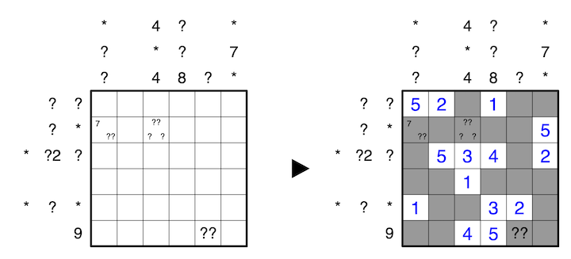

Clues outside the grid indicate the sums of connected groups of numbers in the respective row or column, in order, where empty cells serve as delimeters between groups. A question mark can be any number from 0 to 9, but no clue may have a leading zero. An asterisk indicates obscured information; in place of an asterisk may be zero, one, or multiple groups of numbers.
Clues inside the grid are empty, and the number of values inside a clue cell indicates the total number islands that appear in the 3x3 area centered at the clue cell. Furthermore, each value corresponds to a unique island and indicates the sum of all numbers on that island.
A 1-5 example is provided:
